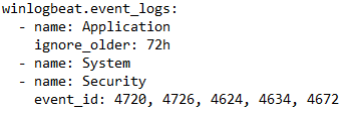
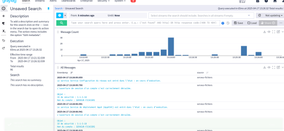
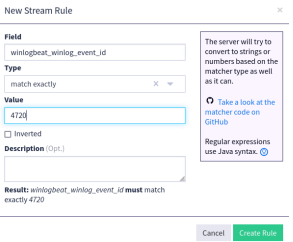
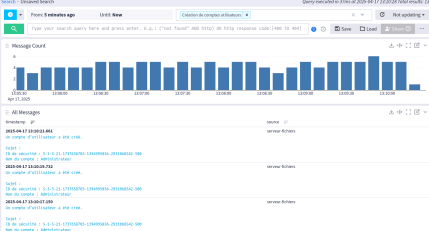
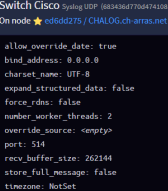
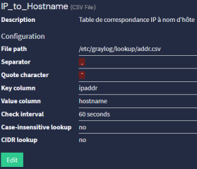
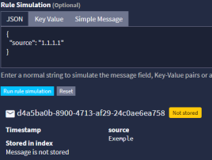
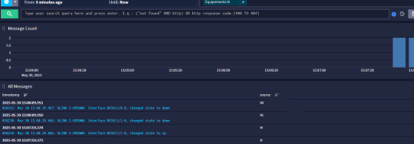

Architecture Graylog
Centralisation et analyse de flux massifs pour le Groupement Hospitalier Artois-Ternois. Transformation de logs bruts en intelligence de sécurité.
I. Sécurité des Identités
Identification des Menaces & Filtrage
Le serveur Windows génère des milliers de logs par minute. Pour une surveillance efficace, j'ai dû identifier les EventIDs critiques. Le focus a été mis sur la création de comptes, car chaque nouvel accès est un vecteur potentiel d'intrusion.
Ciblage Winlogbeat
Configuration du collecteur sur les contrôleurs de domaine pour n'extraire que les IDs nécessaires (4720, etc.).

Analyse du flux brut
Réception de l'ensemble des données dans Graylog (All Logs) avant traitement par pipeline.

Intelligence de Pipeline
Écriture de règles pour isoler le message de création de compte dans l'annuaire hospitalier.

Extraction en Stream
Création d'un flux dédié permettant une vision immédiate sur les nouveaux arrivants ou comptes créés.

II. Supervision Réseau
Centralisation Syslog (Switchs)
L'infrastructure réseau du GHAT repose sur de nombreux équipements. J'ai configuré les switchs pour expédier leurs logs via le protocole UDP Syslog. Le défi : centraliser des équipements de marques et modèles différents dans une seule interface.

Configuration de l'input UDP sur Graylog.
Parsing & Enrichissement
Pour qu'une alerte soit efficace, il faut qu'elle soit lisible. Lire une IP ne suffit pas. J'ai utilisé des Lookup Tables pour mapper chaque IP d'équipement à son nom d'inventaire.


Simulation du pipeline pour vérifier le remplacement dynamique des adresses IP par les noms d'équipements.
Consolidation Réseau
Real-time Visibility
Vue finale du stream réseau. On y observe la réception des logs critiques (erreurs, changements d'état de ports) avec un enrichissement complet de la donnée, permettant une réponse rapide en cas d'incident sur le parc.
